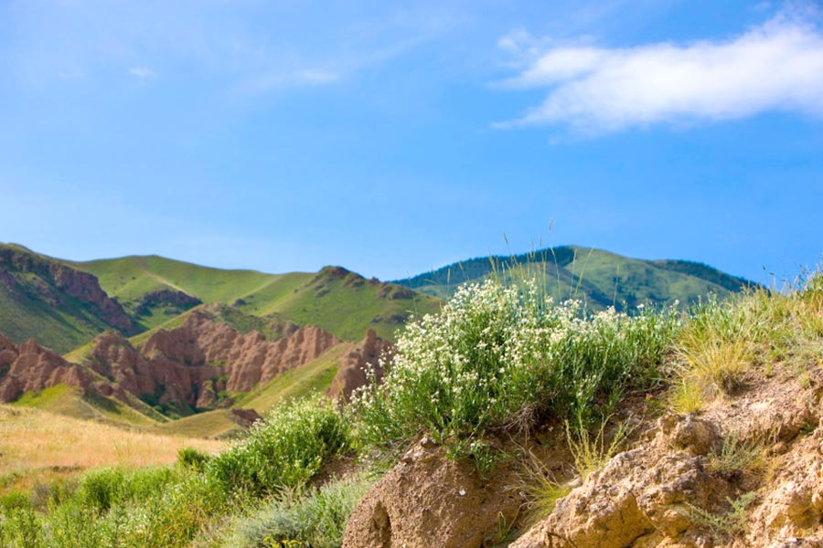
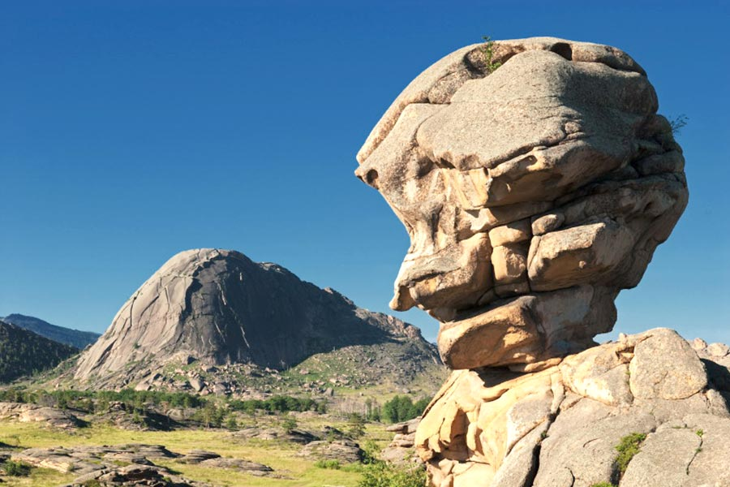
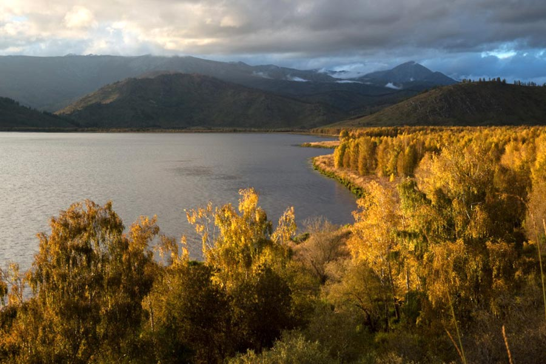
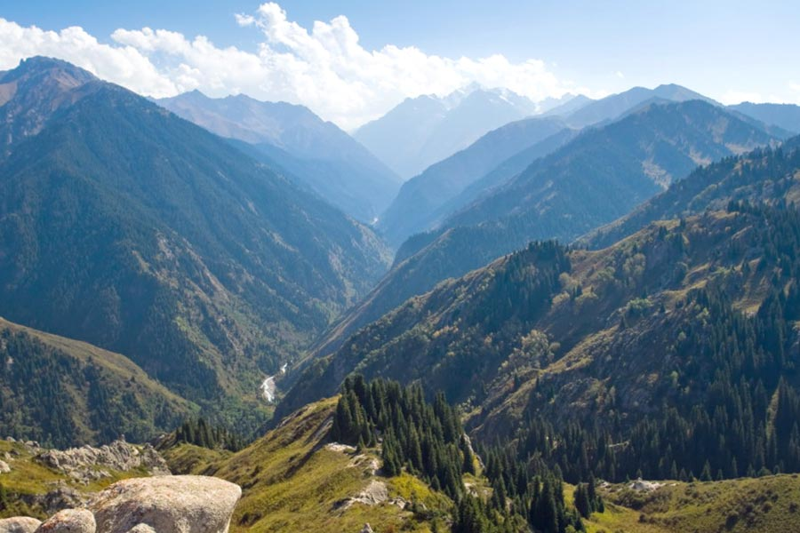
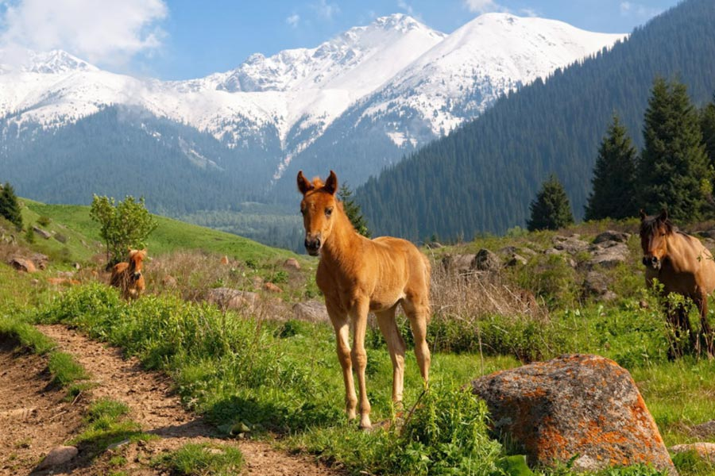
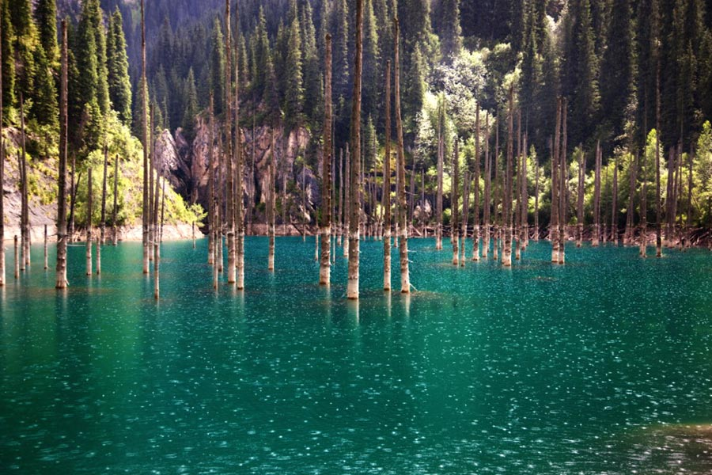

Kazakhstan has 9th the largest territory in the world (2,724,900km2), with the population of only 17 million. Major part of the country are horizonless steppes, deserts and mountains that house thousands species of animals and birds. Kazakhstan is the largest country in the world which has no access to the World Ocean; however the territory of Kazakhstan is washed by land-locked seas: the Caspian and Aral ones. The nature of Kazakhstan is beautiful in its own way. It is severe, since the majority of the territory consists of deserts 164,000,000 ha (44%) and semi-deserts (14%). Only 26% of the territory is occupied by steppe zones and 5,5% (21,000,000 ha) by forest ones. There is Sary-Arka – a “yellow steppe” in the central part of the country and the Turgai plateau to the west from it. The territory of Kazakhstan is so vast that it occupies the Urals in the West and the Altai and Tarbagatai in the East. The Ustyurt plateau and the Caspian sea coast are located in the South-West. The eastern part of Kazakhstan reaches the northern Tien-Shan. The climate of the republic is mainly sharply continental. The temperature in summer rises to +49° in the South and in winter may fall to -57° in the North. At the same time the weather in a desert is changeable and unsteady, hot in the daytime and at night, northern winds are blowing, bringing the cold.
  As far as the countries’ water resource concerns, though the major part of Kazakhstan is deserts, it has 8,500 small and large rivers. The largest ones from them are the Ural, Emba, Syrdarya, Ishim, Ili, Irtysh and Tobol. One of the largest lakes in Kazakhstan is Lake Balkhash. Up to date, Kazakhstan has been paying great attention to conservation of ecosystem, flora and fauna of the Aral Sea, a part of which is located in the territory of the country. Kazakhstan as well owns the whole northern and part of the eastern coast of the Caspian Sea – that is almost 2340 km. About six thousands of plant species vegetate in Kazakhstan, about 500 species of birds, 178 species of animals, 49 species of reptiles, 12 species of amphibians may be encountered in its spaciousness and about 100 species of fishes – in the rivers and lakes. The major part of the forests in the country is located in the region of the northern Tien Shan and Altai mountains. There are juniper forests and alpine meadows there, apple trees and walnuts are growing in the gorges. The mammals are distinguished with the snow leopard, brown bear, and Siberian ibex. Taiga forests are found in the territory of Altai, where in the Kazakh territory a natural wildlife area was set up on Markakol Lake. Here, in the taiga forests such rare species of birds as a cock of the wood, hazel grouse, white grouse are found.
  